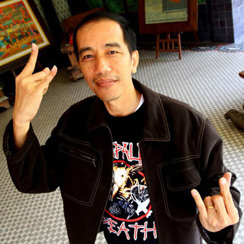

Dia ini adalah orang yang memang sudah terbukti kapasitasnya sebagai seorang tukang buat web. Dan bahkan dia menduduki kepala bagian tukang buat web di perusahaan saya. Dia selalu membuat inovasi-inovasi yang memang sangat tidak dibutuhkan di perusahaan saya.
Ka Ka End
Jangan kaget! Karena di sini Anda akan melihat sisi lain dari diri saya. Silakan dibaca baik-baik karena kalau tidak dibaca dengan baik-baik, maka Anda akan menyesal. Dan Anda juga akan rugi besar. Melebihi kebesaran yang Anda punya. Orang-orang besar sudah banyak membicarakan saya. Namun saya tidak terlalu memperhitungkannya. Malahan itu akan membuat hidup saya semakin susah jika digunakan untuk memperhitungkan hal-hal seperti itu.
Saya ini sebenarnya adalah salah satu web developer yang terkenal di dunia. Apakah Anda mengenal saya? Oh mungkin saja tidak karena saya ini hidup di dunia yang berbeda dengan Anda. Ada apa dengan Anda? Apakah Anda tidak terima? Oke kalau begitu silakan Anda scroll ke bawah! Karena di sana terdapat bukti-bukti yang mengatakannya. Saya tidak sombong, hanya orang lainlah yang membuat saya terlihat sombong. Pada intinya ya saya tidak sombong.
Layanan
Konsultasi
Konsultasi masalah apapun gratis. Asalkan nanti setelah konsultasi Anda harus bersedia membuat web di sini dengan cara berlangganan.
HTML 5
Website yang saya dibuat di sini sudah mendukung teknologi terbaru yaitu HTML 5 yang sudah semakin canggih dan dapat melakukan segala sesuatu.
PHP
Untuk membuat sebuah website menjadi dinamis, diperlukanlah PHP dalam pembuatannya. Sehingga dalam proses manajemen data website menjadi lebih mudah.
Apakah Anda ingin mengetahui lebih lanjut?
Apa Kata Mereka
Tentang saya
Saya adalah orang yang selalu berusaha semaksimal mungkin dalam melakukan sesuatu.
-

Mark Zunckerber
CEO Facebook
-
Selain juga bekerja di perusahaan Mark, dia juga bekerja di perusahaan saya sebagai tukang pemberi inovasi terhadap produk-produk Microsoft. Sebelum adanya dia, perusahaan saya ini sangatlah biasa saja. Dan tanpa adanya dia, mungkin perusahaan saya akan menjadi lebih luar biasa.
Bill Gates
CEO Microsoft
-
Sebenarnya dia adalah orang yang berada di belakang layar terhadap kesuksesan perusahaan yang saya miliki sekarang ini. Tanpa ada dia, mungkin perusahaan saya akan menjadi lebih sukses.
I Wayan Bayu Diarsa memang inspirasi titiang.
Sundar Pichai
CEO Google
-
Dia adalah seorang laki-laki muda yang mempunyai jiwa dewasa seperti orang dewasa pada umumnya. Namun ternyata dia itu masih muda. Dan sudah mempunyai banyak pengalaman di perusahaan-perusahaan skala besar. Dan salah satu perusahaannya adalah perusahaan saya.
Marissa Mayer
CEO Yahoo
-
Indonesia punya banyak pulau, dan juga punya banyak anak muda yang kreatif, inovatif, dan produktif. Dan salah satu orangnya adalah dia. Ya dia adalah Bayu Diarsa yang merupakan anak muda yang punya segudang bangunan di rumahnya.
Joko Widodo
Ane mimpin Indonesia
-
Sebagai orang Bali, dan sebagai anak muda di Bali, dia adalah salah satu orang yang sangat berbeda dengan anak muda lainnya. Dari perbedaan tersebutlah membuat dia menjadi lebih berbeda dari anak muda lainnya.
Mangku Pastika
Ane mimpin Bali
120
Websites
50
Satisfied Clients
320
Projects
333
Magazines and Brochures